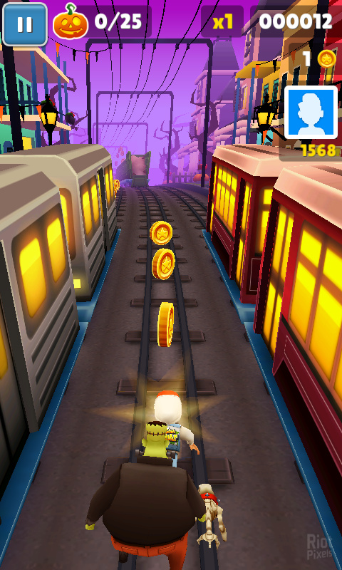
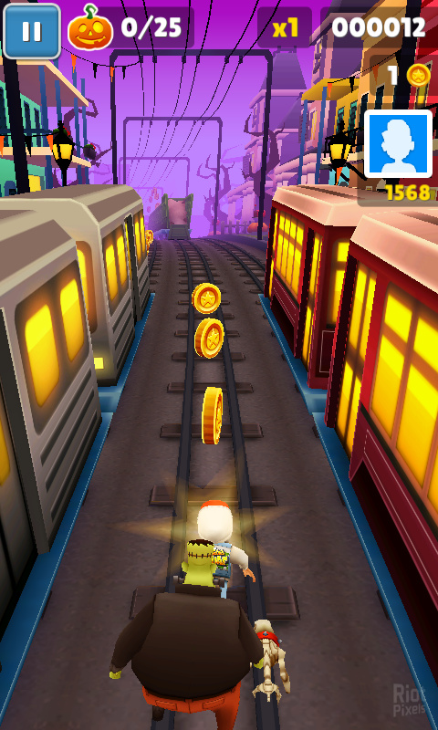
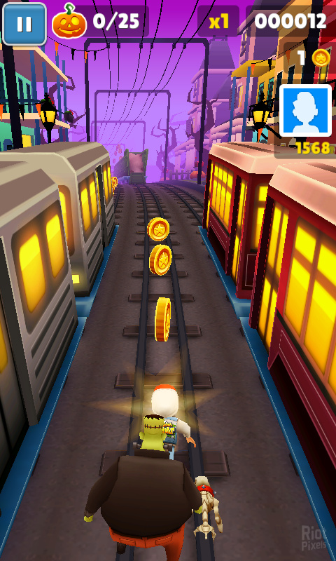

ScreenShots
 

In the world of mobile gaming, Subway Surfers stands as a shining example of what makes a game not just popular, but a cultural phenomenon. It's more than just an addictive pastime; it's a journey filled with excitement, challenge, and a sense of adventure that transcends age and borders. Subway Surfers, at its core, is a testament to the enduring appeal of endless running games. With intuitive controls and a simple yet endlessly engaging gameplay loop, it has captured the hearts of players from all walks of life. It's the game you turn to during your daily commute, your brief moments of respite, or when you simply want to unwind and let off steam. Subway Surfers is always there, offering a thrilling escape from the mundane. What truly sets Subway Surfers apart, however, is its commitment to innovation and evolution. The World Tour feature, which takes players to new and exotic locations every few weeks, is a stroke of genius. It not only keeps the game fresh but also serves as a delightful virtual travel experience. Whether you're exploring the neon-lit streets of Tokyo or the vibrant markets of Mumbai, Subway Surfers makes the world feel both vast and accessible. The game's dedication to customization is another aspect that keeps players invested. The ability to deck out your character in a plethora of outfits and ride on a variety of hoverboards adds a personal touch to the adventure. Collecting coins and power-ups becomes more than just a means to an end; it's a way to express your unique style and identity within the game. Subway Surfers' multiplayer features also add a layer of social connectivity that few mobile games can match. Competing with friends, climbing leaderboards, and participating in weekly events foster a sense of camaraderie and friendly rivalry. It's not just about achieving high scores; it's about sharing the joy of success and learning from each other's strategies. Furthermore, the game's developers deserve praise for their dedication to player satisfaction. Regular updates, special events, and limited-time offers ensure that Subway Surfers remains dynamic and exciting. Whether it's a new character, a fresh set of challenges, or seasonal content, there's always something to look forward to.

© Victor All Right Reserved